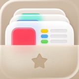
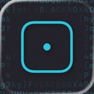
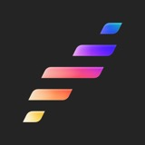
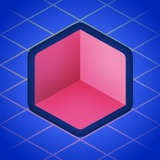
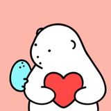

S1 · 拟物材质
借熟悉的器物、材质和光影，带来可触摸的生活感。看收纳盒与卡片的关系，不照搬它的造型。
先确认希望用户理解什么、感受到什么，再看图选择 1–3 种风格，分别呈现统一品牌主张。确认生图且未另定数量时，每种所选风格先做一张，具体内容可独立构思；仅在明确要求时固定同一内容换画法。六类是沟通入口，可交叠；它们不是 Apple 官方分类。下列来自跨年份 Apple Design Awards 获奖产品，图标是 2026-11-07 当前商店快照，不能证明与获奖当年相同。

借熟悉的器物、材质和光影，带来可触摸的生活感。看收纳盒与卡片的关系，不照搬它的造型。

用少量形状和负空间建立轮廓记忆。观察青色框与圆点；当前版本附有字符纹理与边缘光。
让名称或字形成为主识别。观察字形比例、周围留白与辅助色块，而不是模仿这个品牌的T。

让连续色阶参与品牌记忆。渐变依附于明确的形状，轮廓与主次仍然清楚。

通过透视、体块和层叠建立空间感。主物体保持集中，避免为了立体而堆小物件。

用角色、动作或具体场景承载感受。可以是一个IP，也可以是人正在经历的生活时刻。
Alto’s Odyssey
ADA 2018 · 场景补充
获奖的是产品设计体验，不是其图标单独获奖。品牌与图像权利归各权利人，小图仅供研究观察。参考画法、结构与细节取舍，不复制品牌身份。不同品类都可以合理采用多种方向；先看自己的产品命题。详细来源见 references/style-catalog.md。